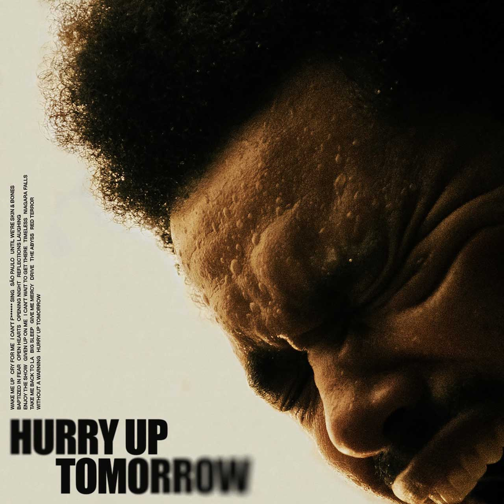

One genre I listen to is R&B. R&B music is a genre of music that originated in the 1940s from African-Americans. It is characterized
by smooth rhythms, blending elements of jazz, gospel, and blues in its music. One of my favorite R&B songs currently is "Luther" by
Kendrick Lamar & SZA. Another honorable mention of an R&B song that I have been listening to is "Folded" by Kehlani and "Snooze" by SZA.
Rap

Rap is a musical genre that originated and developed in the Bronx around the 1970s and involves the vocalist to deliver rapid-fire lyrics that tell a story
through rhyme, rhythm, flow, and a consistent beat. While I do not have a favorite rap song, a few songs that I do like from the rap category are "Timeless" by The Weeknd,
and "Dark Thoughts" by Lil Tecca.
Pop
Pop music is a genre that has mainstream appeal, catchy melodies, and simple, repetitive structures
that are easy to remember and sing along to. Pop music is versatile and can incorporate elements from other genres,
constantly evolving to reflect current trends. While I do not have a favorite pop song, a few songs that I do like from the pop category are "One Dance" by Drake,
"Baby" by Justin Beiber, and "Down" by Jay Sean.
Bollywood
Bollywood music is a diverse genre of music that covers numerous different blends and mixes of other styles. There are elements of hip-hop, pop, classical, folk,
and other music genres that can blend and fit under the Bollywood music category. A lot of Bollywood songs are typically upbeat and catchy (likened to pop), while
others are slower and heartfelt. Some of my favorite Bollywood songs are "Sooraj Dooba Hain", "Subha Hone Na De", and "Chaleya"